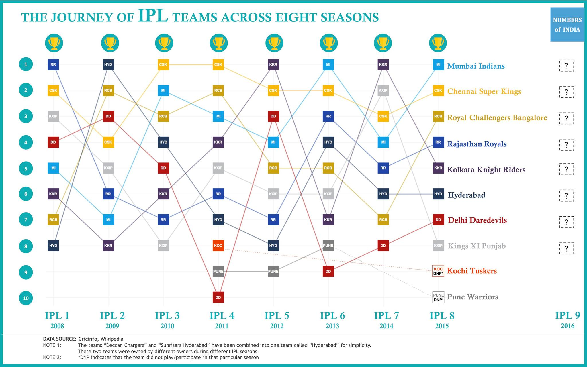

#IPL Season 9, 2016 is about to start in April.
We looked back at the eight seasons till now, to find out which teams have consistently been at top across seasons and which ones were inconsistent.
Clearly, Chennai Super Kings, previously led by Mahendra Singh Dhoni has been the most consistent team. They landed a spot in the top 4 in each and every season. Apart from CSK, Mumbai Indians and Kolkata Knight Riders won the IPL two times each. Rajasthan Royals, had a drastic fall in rankings, after their first season championship. But, they have shown signs of recovery in the recent seasons. Unfortunately, they won't be part of #IPL 2016. Delhi Daredevils and Kings XI Punjab had the bumpiest rides across eight seasons. However, looking at their squads, we see huge potential in them to snatch the top spots in 2016. Royal Challengers Bangalore has been so close to winning an IPL multiple times. We would love to see them win this year. Deccan Chargers/SunRisers Hyderabad had won the championship in 2009. But, it's time they pull up their socks and raise the bar.
IPL - Indian Premier League 2016 has two new teams joining us: The Gujarat Lions and Rising Pune Supergiants We're super excited to watch them surprise us. Who do you think is going to win #IPL 2016? Let us know in the comments below.
Clearly, Chennai Super Kings, previously led by Mahendra Singh Dhoni has been the most consistent team. They landed a spot in the top 4 in each and every season. Apart from CSK, Mumbai Indians and Kolkata Knight Riders won the IPL two times each. Rajasthan Royals, had a drastic fall in rankings, after their first season championship. But, they have shown signs of recovery in the recent seasons. Unfortunately, they won't be part of #IPL 2016. Delhi Daredevils and Kings XI Punjab had the bumpiest rides across eight seasons. However, looking at their squads, we see huge potential in them to snatch the top spots in 2016. Royal Challengers Bangalore has been so close to winning an IPL multiple times. We would love to see them win this year. Deccan Chargers/SunRisers Hyderabad had won the championship in 2009. But, it's time they pull up their socks and raise the bar.
IPL - Indian Premier League 2016 has two new teams joining us: The Gujarat Lions and Rising Pune Supergiants We're super excited to watch them surprise us. Who do you think is going to win #IPL 2016? Let us know in the comments below.